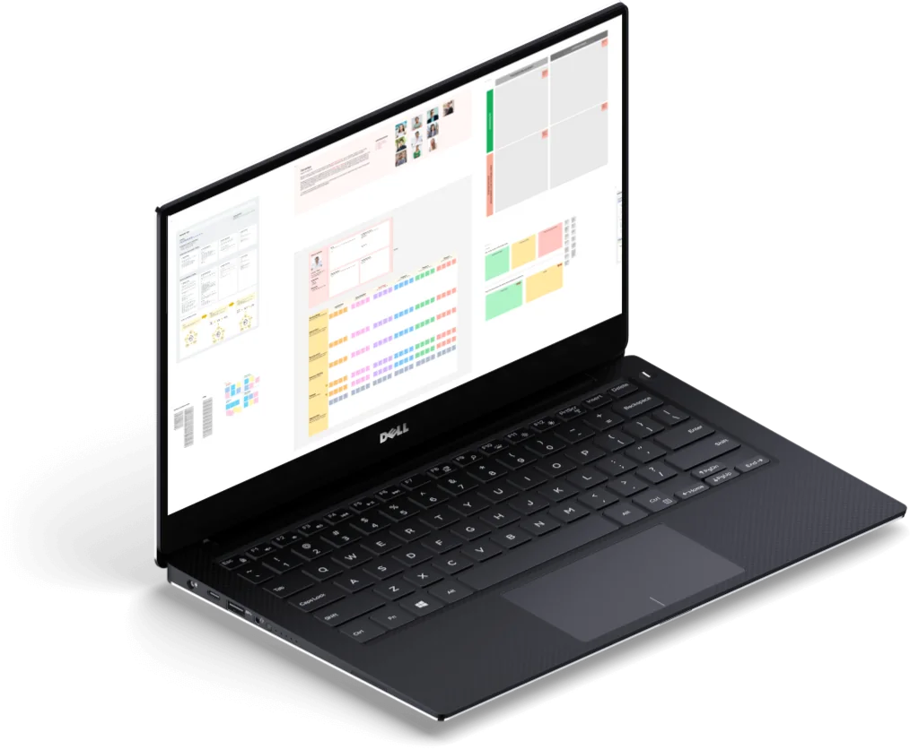
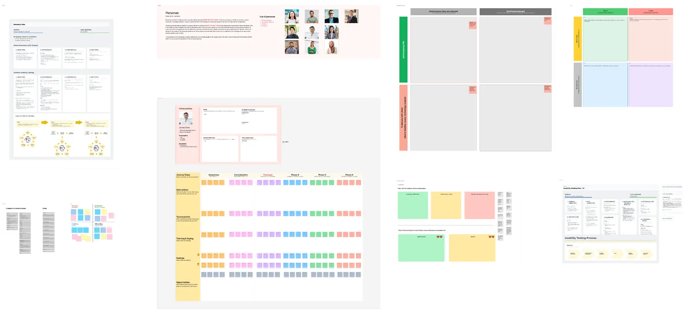
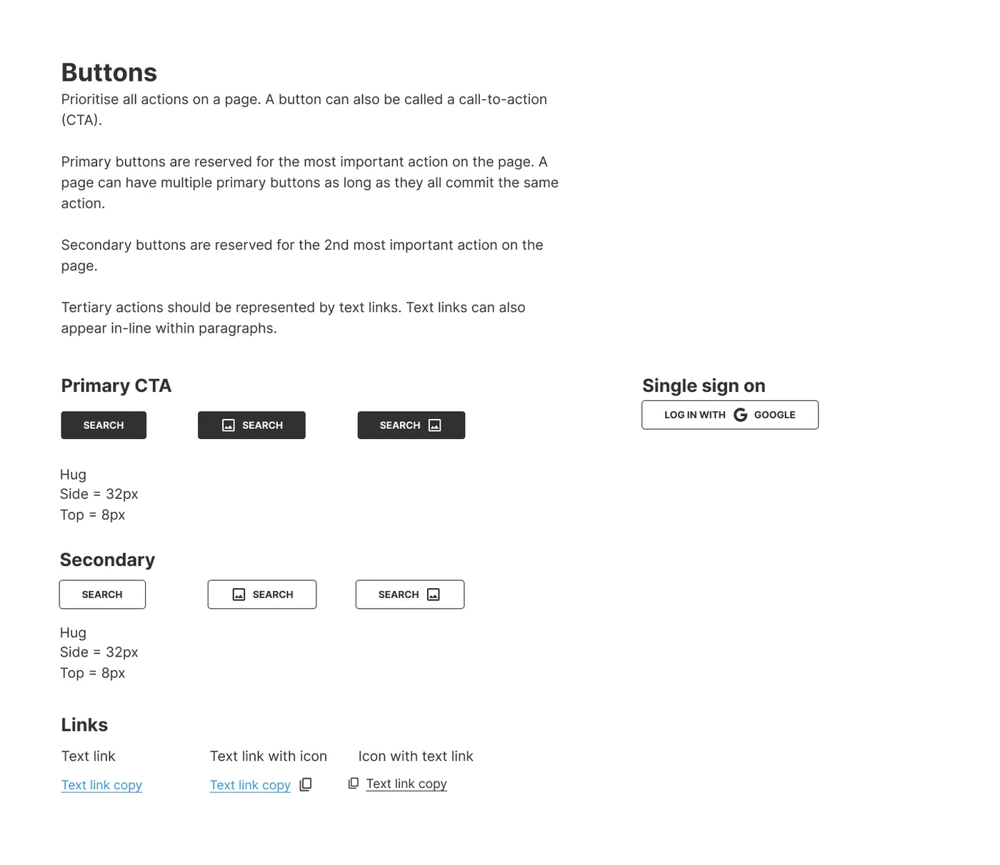
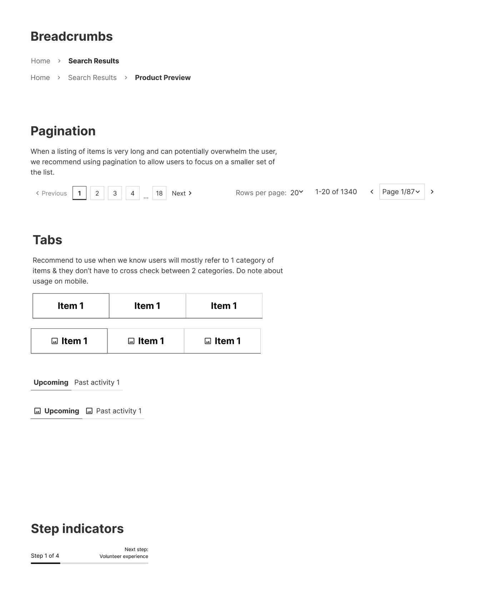
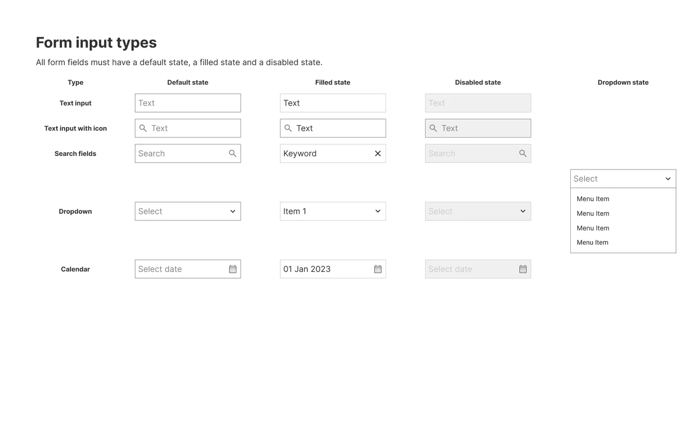
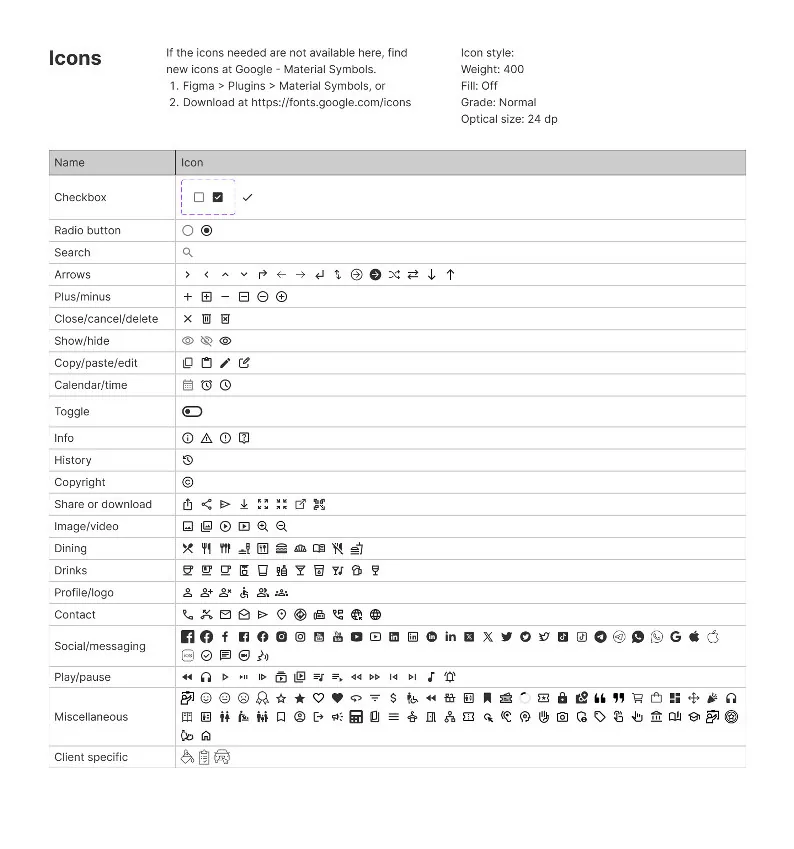
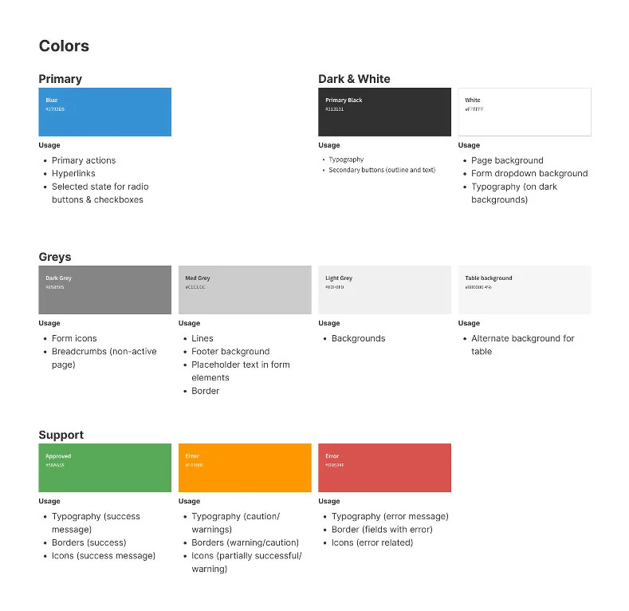

Convertium
A wireframing and documentation system for a UX team
I independently developed a process that helps Convertium’s UX team wireframe faster, document more efficiently and stay consistent across clients and projects.
- Role
- UX strategist and designer
- Project
- Ongoing since 2023
- Team
- Convertium UX team, Creative

Results
- A shared Figma library that has been the default starting point for every new UX project at Convertium since 2023.
- Faster turnaround, and faster hand-off to the Creative team for high-fidelity mockups.
- The framework was adapted to set up a client’s internal design system in Figma, which has been used across all of their projects since launch.
The system
Templates with the reasoning attached. Each template is paired with usage instructions and rationale. That keeps documentation consistent, and helps junior designers understand and present the why behind their work.


An atomic wireframe kit. A component library that lets the UX team produce consistent wireframes for every client, new and existing.









